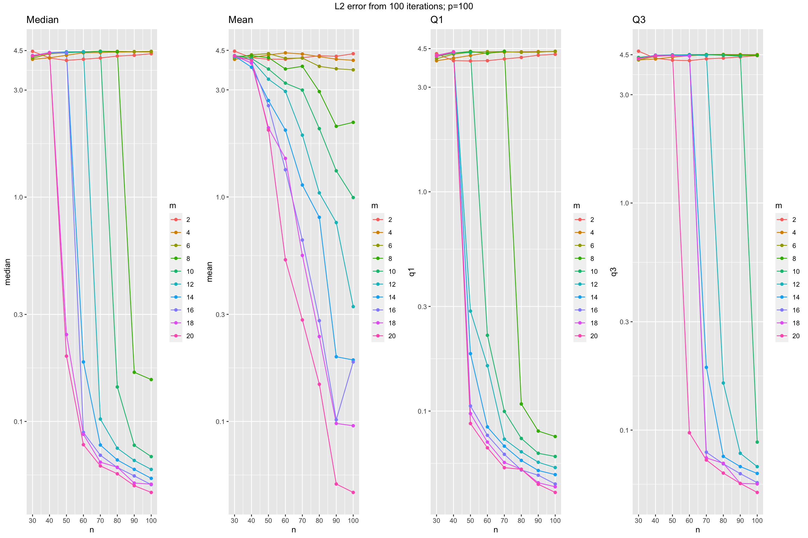
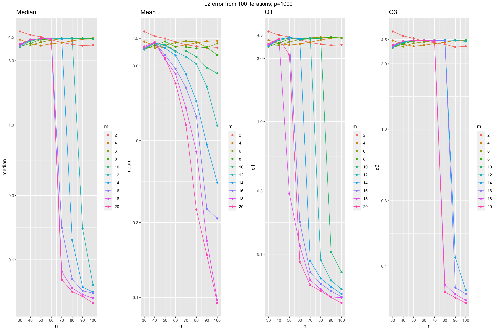
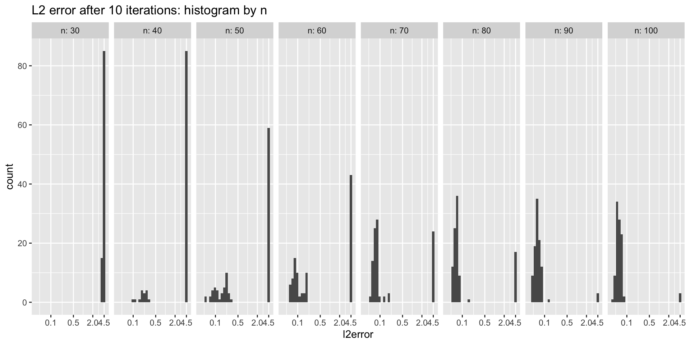
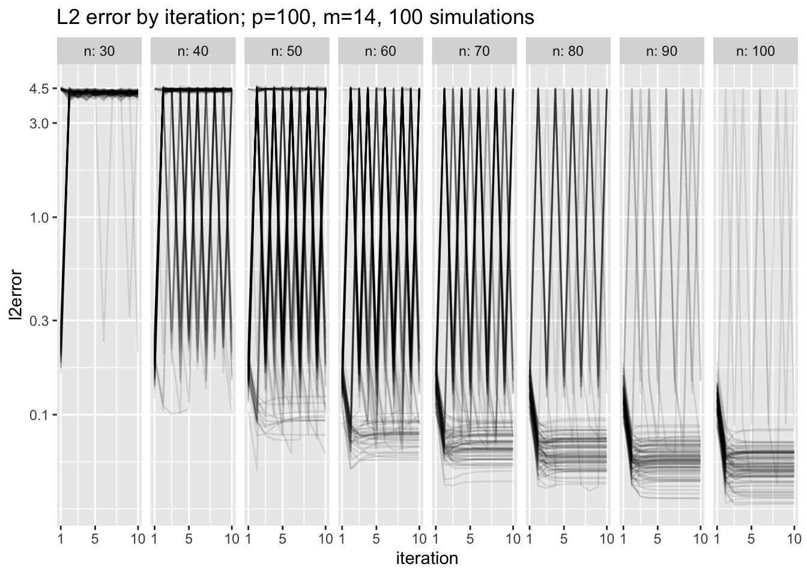
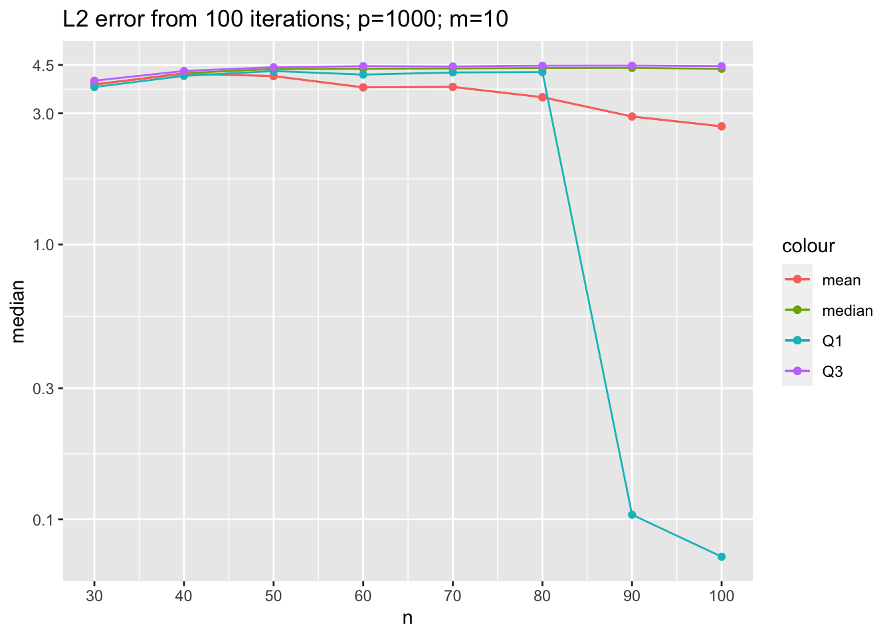

Last updated: 2020-03-29
Checks: 7 0
Knit directory: tlcf/
This reproducible R Markdown analysis was created with workflowr (version 1.6.0). The Checks tab describes the reproducibility checks that were applied when the results were created. The Past versions tab lists the development history.
Great! Since the R Markdown file has been committed to the Git repository, you know the exact version of the code that produced these results.
Great job! The global environment was empty. Objects defined in the global environment can affect the analysis in your R Markdown file in unknown ways. For reproduciblity it’s best to always run the code in an empty environment.
The command set.seed(20200324) was run prior to running the code in the R Markdown file. Setting a seed ensures that any results that rely on randomness, e.g. subsampling or permutations, are reproducible.
Great job! Recording the operating system, R version, and package versions is critical for reproducibility.
Nice! There were no cached chunks for this analysis, so you can be confident that you successfully produced the results during this run.
Great job! Using relative paths to the files within your workflowr project makes it easier to run your code on other machines.
Great! You are using Git for version control. Tracking code development and connecting the code version to the results is critical for reproducibility. The version displayed above was the version of the Git repository at the time these results were generated.
Note that you need to be careful to ensure that all relevant files for the analysis have been committed to Git prior to generating the results (you can use wflow_publish or wflow_git_commit). workflowr only checks the R Markdown file, but you know if there are other scripts or data files that it depends on. Below is the status of the Git repository when the results were generated:
Ignored files:
Ignored: .Rproj.user/
Untracked files:
Untracked: analysis/temp.Rmd
Untracked: test.txt
Unstaged changes:
Modified: analysis/index.Rmd
Modified: code/wflow_commands.R
Note that any generated files, e.g. HTML, png, CSS, etc., are not included in this status report because it is ok for generated content to have uncommitted changes.
These are the previous versions of the R Markdown and HTML files. If you’ve configured a remote Git repository (see ?wflow_git_remote), click on the hyperlinks in the table below to view them.
| File | Version | Author | Date | Message |
|---|---|---|---|---|
| Rmd | 2a75053 | Joonsuk Kang | 2020-03-29 | AltMin and noisy parameter model analysis |
Model: \[ y_i=X_i\theta_*+\eta_i \text{ where }\eta_i=\Sigma_*^{1/2}\tilde{\eta}_i \] where \(y_i\) is a \(m \times 1\) response vector; \(X_i\) is a \(m \times p\) data matrix
Structural Parameters
number of samples \(n=30,32,\dots,58,60\)
sparsity level \(s=f(\theta_*)=20\); hence, theta=c(rep(1,times=10), rep(-1,times=10), rep(0, times=980))
\(\Sigma_*\) is given as a block diagonal matrix with \(\Sigma'=\begin{pmatrix}1 & 0.9\\0.9 & 1 \end{pmatrix}\) replicated along the diagonal
Estimation Parameters
Initialization: let \(\hat{\Sigma}_0=I\)
The results are exported to csv file and imported below for visualization
library(readr)
library(tidyverse)── Attaching packages ─────────────────────────────────────────────────────────── tidyverse 1.3.0 ──✓ ggplot2 3.3.0 ✓ dplyr 0.8.4
✓ tibble 2.1.3 ✓ stringr 1.4.0
✓ tidyr 1.0.2 ✓ forcats 0.5.0
✓ purrr 0.3.3 ── Conflicts ────────────────────────────────────────────────────────────── tidyverse_conflicts() ──
x dplyr::filter() masks stats::filter()
x dplyr::lag() masks stats::lag()errors_p100 <- read_csv("output/errors_p100.csv", col_names = FALSE)Parsed with column specification:
cols(
X1 = col_double(),
X2 = col_double(),
X3 = col_double(),
X4 = col_double()
)colnames(errors_p100) <- c("n", "m", "iter", "l2error")
errors_p100 %>% group_by(n,m) %>% summarise(mean=mean(l2error),
sd = sd(l2error),
median = median(l2error),
q1=quantile(l2error,0.25),
q3=quantile(l2error,0.75)) -> df.p100
df.p100 %>%
ungroup() %>% mutate(m=factor(m)) %>%
ggplot(aes(x=n, y=median, group=m, col=m))+geom_line()+geom_point()+
scale_x_continuous(breaks=seq(30,100,by=10))+
ggtitle("Median")+
scale_y_log10(breaks=c(0.1, 0.3, 1, 3, 4.5)) -> fig.p100.median
df.p100 %>%
ungroup() %>% mutate(m=factor(m)) %>%
ggplot(aes(x=n, y=mean, group=m, col=m))+geom_line()+geom_point()+
scale_x_continuous(breaks=seq(30,100,by=10))+
ggtitle("Mean")+
scale_y_log10(breaks=c(0.1, 0.3, 1, 3, 4.5)) -> fig.p100.mean
df.p100 %>%
ungroup() %>% mutate(m=factor(m)) %>%
ggplot(aes(x=n, y=q1, group=m, col=m))+geom_line()+geom_point()+
scale_x_continuous(breaks=seq(30,100,by=10),)+
ggtitle("Q1")+
scale_y_log10(breaks=c(0.1, 0.3, 1, 3, 4.5)) -> fig.p100.q1
df.p100 %>%
ungroup() %>% mutate(m=factor(m)) %>%
ggplot(aes(x=n, y=q3, group=m, col=m))+geom_line()+geom_point()+
scale_x_continuous(breaks=seq(30,100,by=10))+
ggtitle("Q3")+
scale_y_log10(breaks=c(0.1, 0.3, 1, 3, 4.5)) -> fig.p100.q3library(readr)
library(tidyverse)
errors_p1000 <- read_csv("output/errors_p1000.csv", col_names = FALSE)Parsed with column specification:
cols(
X1 = col_double(),
X2 = col_double(),
X3 = col_double(),
X4 = col_double()
)colnames(errors_p1000) <- c("n", "m", "iter", "l2error")
errors_p1000 %>%
group_by(n,m) %>% summarise(mean=mean(l2error),
sd = sd(l2error),
median = median(l2error),
q1=quantile(l2error,0.25),
q3=quantile(l2error,0.75)) -> df.p1000
df.p1000 %>%
ungroup() %>% mutate(m=factor(m)) %>%
ggplot(aes(x=n, y=median, group=m, col=m))+geom_line()+geom_point()+
scale_x_continuous(breaks=seq(30,100,by=10))+
ggtitle("Median")+
scale_y_log10(breaks=c(0.1, 0.3, 1, 3, 4.5)) -> fig.p1000.median
df.p1000 %>%
ungroup() %>% mutate(m=factor(m)) %>%
ggplot(aes(x=n, y=mean, group=m, col=m))+geom_line()+geom_point()+
scale_x_continuous(breaks=seq(30,100,by=10))+
ggtitle("Mean")+
scale_y_log10(breaks=c(0.1, 0.3, 1, 3, 4.5)) -> fig.p1000.mean
df.p1000 %>%
ungroup() %>% mutate(m=factor(m)) %>%
ggplot(aes(x=n, y=q1, group=m, col=m))+geom_line()+geom_point()+
scale_x_continuous(breaks=seq(30,100,by=10),)+
ggtitle("Q1")+
scale_y_log10(breaks=c(0.1, 0.3, 1, 3, 4.5)) -> fig.p1000.q1
df.p1000 %>%
ungroup() %>% mutate(m=factor(m)) %>%
ggplot(aes(x=n, y=q3, group=m, col=m))+geom_line()+geom_point()+
scale_x_continuous(breaks=seq(30,100,by=10))+
ggtitle("Q3")+
scale_y_log10(breaks=c(0.1, 0.3, 1, 3, 4.5)) -> fig.p1000.q3gridExtra::grid.arrange(fig.p100.median, fig.p100.mean, fig.p100.q1, fig.p100.q3,
ncol=4, top="L2 error from 100 iterations; p=100")
gridExtra::grid.arrange(fig.p1000.median, fig.p1000.mean, fig.p1000.q1, fig.p1000.q3,
ncol=4, top="L2 error from 100 iterations; p=1000")
Note that L2 error of 4.5 corresponds to \(\sum_{j=1}^p (\hat{\theta}_j-\theta_{*,j})^2=4.5^2=20.25\), which happens if we set \(\hat{\theta}=0\).
With increasing number of observations \(n\), for a given \(m\) (the dimension of \(y_i\)) and \(p\) (dimension of predictors), the performance of AltMin algorithm seems to show a sudden and sharp improvement, rather than an incremental improvement. The median, Q1, and Q3 share this same pattern.
Check the distribution of 100 simulations (setting: p=100, m=14) below. We can see that there are two distinct mixture distributions.
errors_p100 %>%
filter(m==14) %>%
ggplot()+
geom_histogram(aes(x=l2error), bins=30)+
facet_grid(~n, labeller=labeller(n=label_both))+
scale_x_log10(breaks=c(0.1, 0.5, 2, 4.5))+
ggtitle("L2 error after 10 iterations: histogram by n")Warning: Transformation introduced infinite values in continuous x-axisWarning: Removed 1 rows containing non-finite values (stat_bin).
We conjecture that there exists a domain of attraction for small L2 errors, where the AltMin algorithm works well. For a given initialization, the data (\(\{(X_i,y_i)\}_{i=1}^n\)) follows a distribution in which if the data falls into the domain of attraction, the performance of AltMin is good enough and the performance is not good otherwise. We can verify the conjecture from the following figure. Below is another set of simulations which show the evolution of L2 error along 10 iterations. Each line corresponds to a simulation run. We set p=100, m=14, and run 100 simulations per n.
If the data falls into this domain of attraction, the L2 error becomes around 0.1–0.2 after only one iteration, significantly improves after the 2nd iteration, and then no further significant improvements are made. However, if the data falls out of the domain, its estimator either stays at an uninformative guess or oscillates between an uninformative guess and a bad result.
errors_p100_m14 <- read_csv("output/errors_p100_m14.csv", col_names = FALSE)Parsed with column specification:
cols(
X1 = col_double(),
X2 = col_double(),
X3 = col_double(),
X4 = col_double(),
X5 = col_double(),
X6 = col_double(),
X7 = col_double(),
X8 = col_double(),
X9 = col_double(),
X10 = col_double(),
X11 = col_double()
)data.frame(n = rep(unlist(errors_p100_m14[,1], use.names=FALSE), each=(ncol(errors_p100_m14)-1)),
iteration = rep(1:(ncol(errors_p100_m14)-1), nrow(errors_p100_m14)),
idx = rep(1:nrow(errors_p100_m14), each=ncol(errors_p100_m14)-1),
l2error = c(t(errors_p100_m14[,-1]))
) %>%
ggplot()+geom_line(aes(x=iteration, y=l2error, group=idx), alpha=0.1)+
facet_grid(~n, labeller = labeller(n=label_both))+
scale_x_continuous(breaks=c(1,5,10))+
ggtitle("L2 error by iteration; p=100, m=14, 100 simulations")+
scale_y_log10(breaks=c(0.1, 0.3, 1, 3, 4.5)) 
Suppose we fix simulation and estimation parameters. The stochastic data generation process has a domain of attraction in which the AltMin algorithm works well. Let’s denote \(\tau(X)=1\) if the \(X\) falls into the domain of attraction and \(\tau(X)=0\) otherwise. The probability of data falling into the domain of attraction \(P(\tau(X)=1)\) is an increasing function with respect to sample size \(n\), dimension of response \(m\) and decreasing in the number of parameters \(p\).
The \(L_2\) error of AltMin algorithm given that the data falls into the domain of attraction \(L_2(X)|\tau(X)=1\) is an decreasing function (=petter performance) with respect to sample size \(n\), dimension of response \(m\). The effect of \(p\) is not obvious from the figures.
My result is qualitatively different from the paper’s Figure 1. Panel (a). For p=1000 and m=10 as in Figure 1:
df.p1000 %>%
ungroup() %>%
filter(m==10) %>%
ggplot()+
geom_line(aes(x=n, y=median, col='median'))+geom_point(aes(x=n, y=median, col='median'))+
geom_line(aes(x=n, y=mean, col='mean'))+geom_point(aes(x=n, y=mean, col='mean'))+
geom_line(aes(x=n, y=mean, col='mean'))+geom_point(aes(x=n, y=mean, col='mean'))+
geom_line(aes(x=n, y=q1, col='Q1'))+geom_point(aes(x=n, y=q1, col='Q1'))+
geom_line(aes(x=n, y=q3, col='Q3'))+geom_point(aes(x=n, y=q3, col='Q3'))+
scale_x_continuous(breaks=seq(30,100,by=10))+
ggtitle("L2 error from 100 iterations; p=1000; m=10")+
scale_y_log10(breaks=c(0.1, 0.3, 1, 3, 4.5)) 
The difference may be due to different initialization. The Banerjee paper seems to be free of bad data, i.e. the data generated outside of the domain of attraction. This may be able to be obtained by a good initialization which ensures the domain of attraction is much wider. It would be helpful if we could see their code.
Further, it would be meaningful to compare our good data result with their theoretical predictions (and their simulation studies).